My name is Nina, I am 31 years old and I study multimedia design at Zealand in Køge. Beside my study, I love spending time drawing and photographing. I pretty much always have my SLR camera with me, so I can capture moments and frames of what inspires me in my everyday life.
I love my creative side, and dream of being able to live off my passion for design. In the world of media, there will always be something new to learn, and this just makes it even more interesting to work with. Usability and creativity are key words in my style of design. After several years in retail, I have encountered user interface challenges and this has simply made my interest in usability greater.
Space Travel / Moonshine.
This was my very first project as a multimedia design student. Our idea was a high school called Moonshine located on the moon. The division of labor in this project was very fluid as we did not all know our competencies and interests yet. My role was primarily design, where I mainly used Adobe Photoshop. I got to try, to me, brand new programs as we all had to code a page for the website.

Dance, dance, dance / Line Dance.
This time we had to once again code one page each. In addition, I became responsible for design, and should therefore as far as possible, create an overview of the style and make sure that everyone designed in the same style. I had to make sure everyone in the group used the same font, font size and colors on the website as well as in our mock ups.

Entrepreneurship competition / Call Me Handy
This project was divided into 2 parts. In the first half, we had a startup mission where we had to come up with an idea for a company and get into entrepreneurship. In the second part, we were going to learn about SoMe and branding.
Our brand Call Me Handy has a concept that involves developing an app that makes everyday life easier in a safe environment. Our app is for people who need a helping hand at home when it comes to various small craft tasks and gardening. In addition, the app is for those who have some experience (possibly not a trained craftsman) in certain areas, who would like to earn a little extra. It is a win-win situation for both parties as a network and flex jobs are created.
I was responsible for Adobe XD, and had the task of keeping track of the design and helping with various challenges. In Adobe XD, we made wireframes and mock ups, where we eventually got our mock up to act as a prototype. When we again all had to make sure to code a page each, I was assigned our about us. At the presentation, I was in charge of our pitch.
 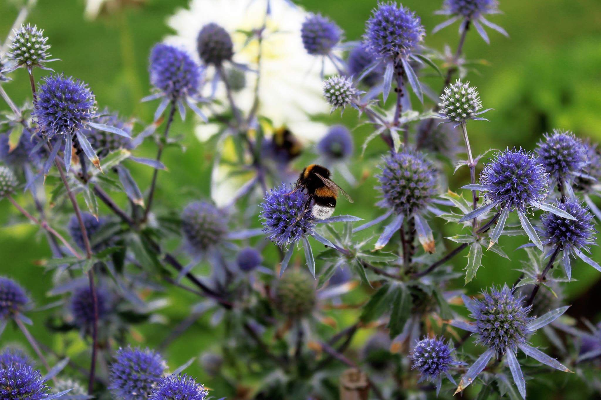
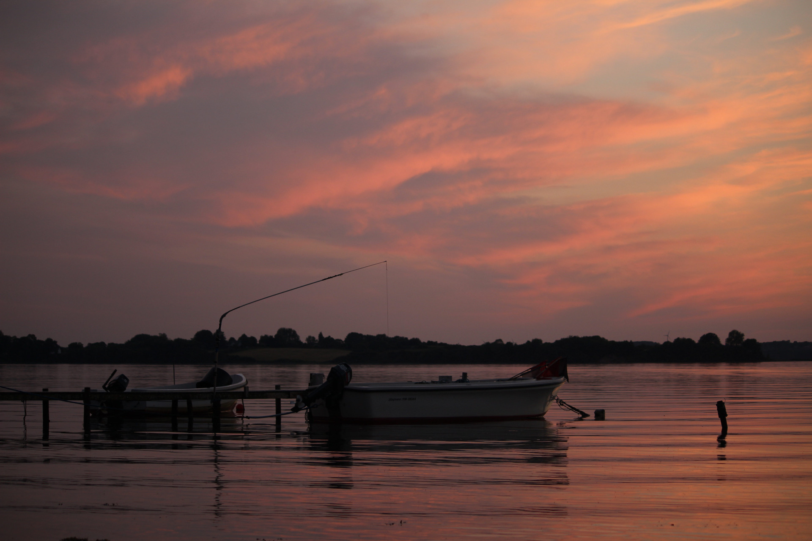
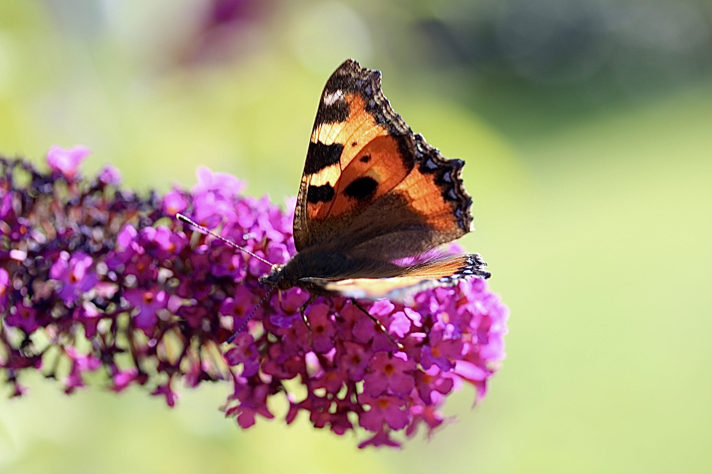
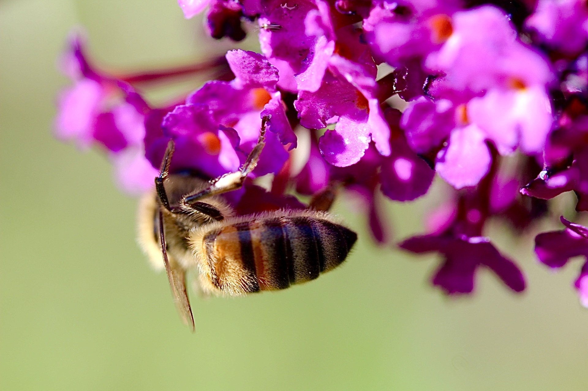
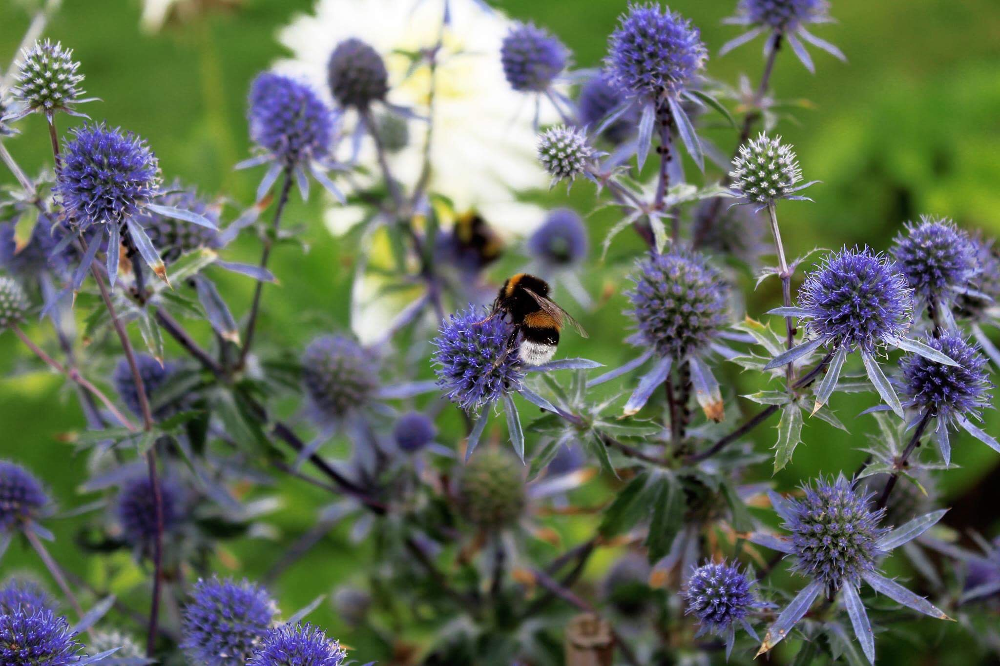
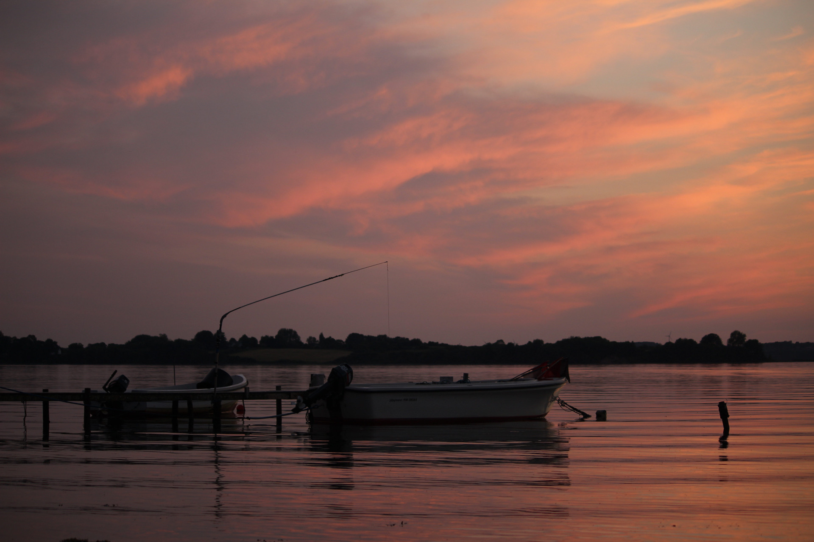
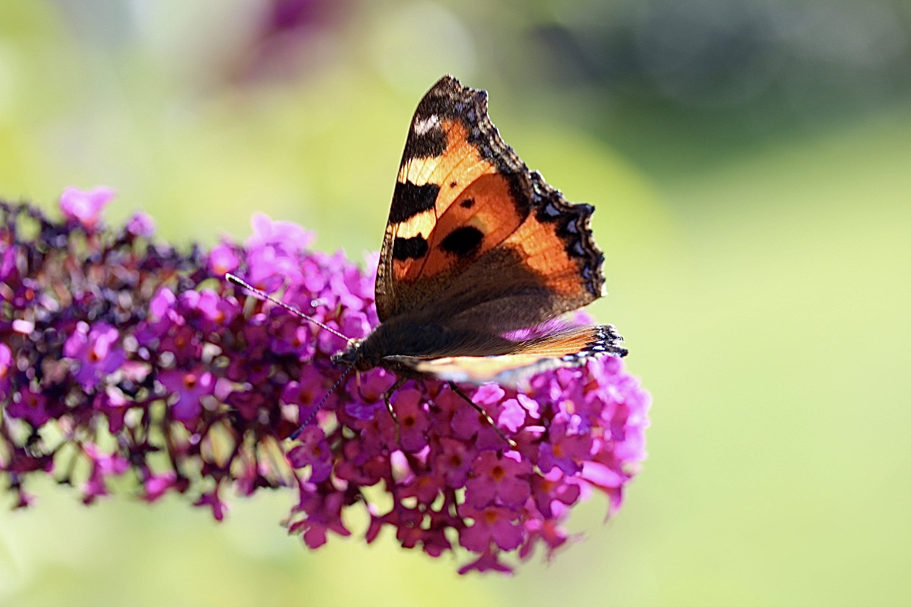
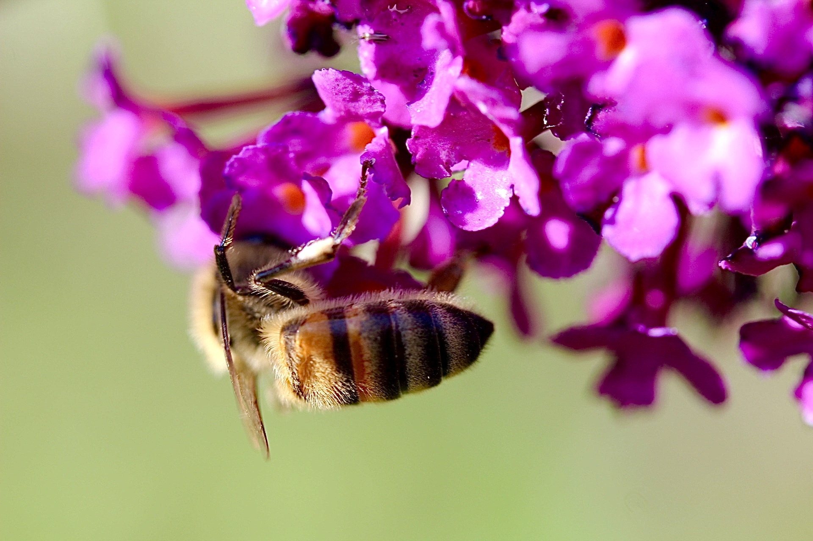


 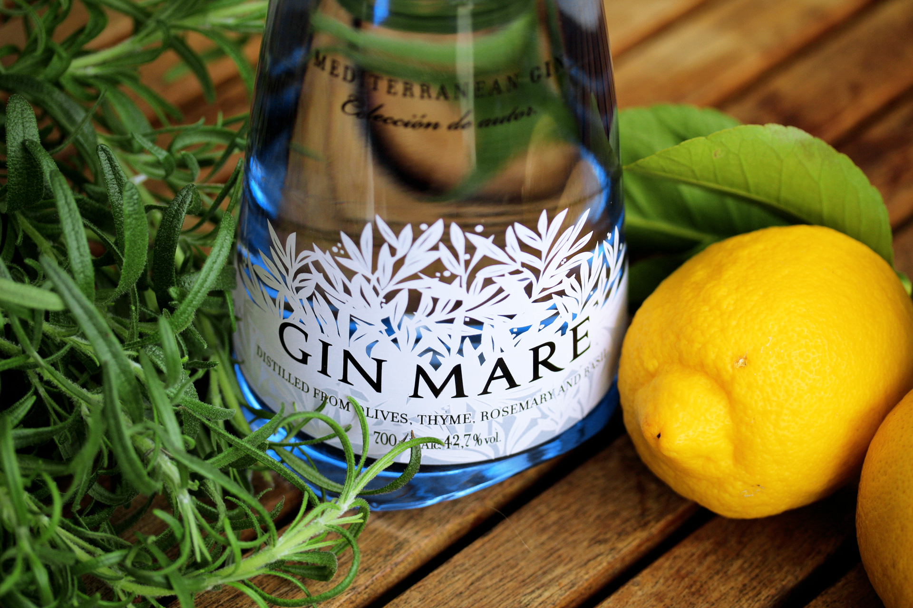
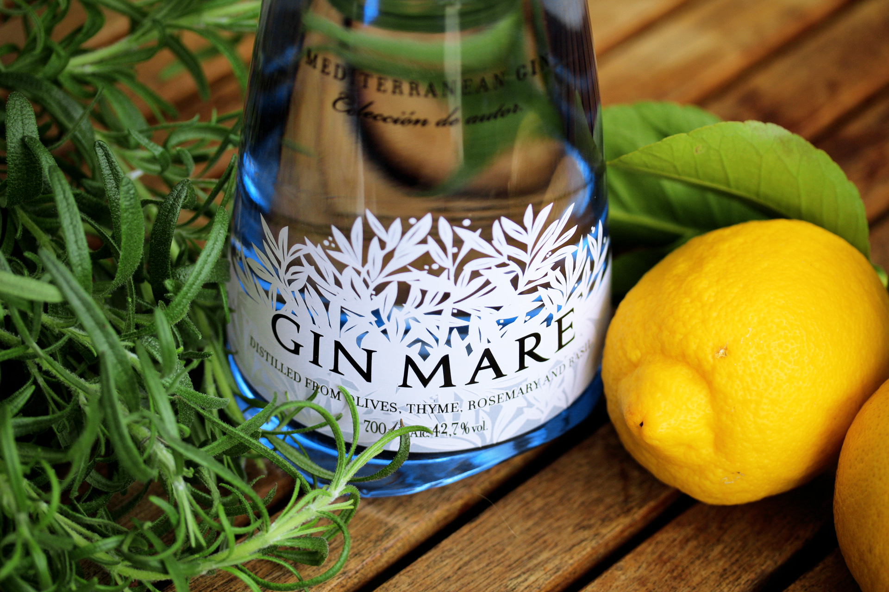
 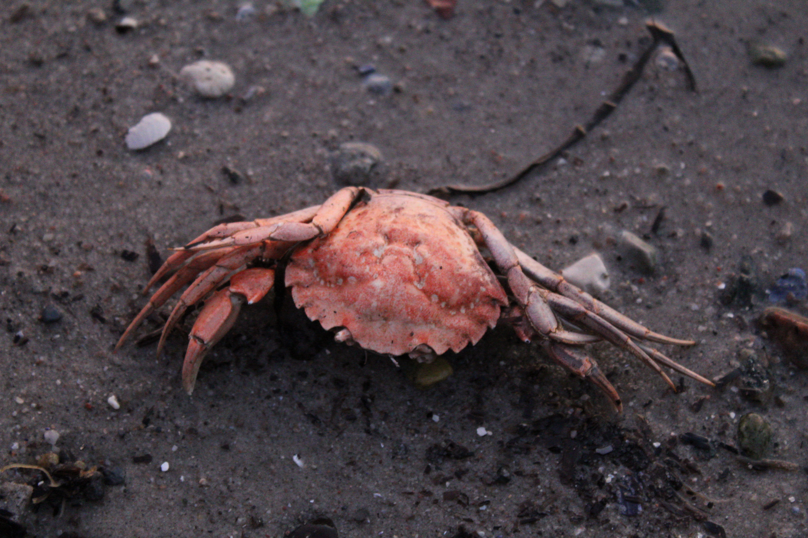
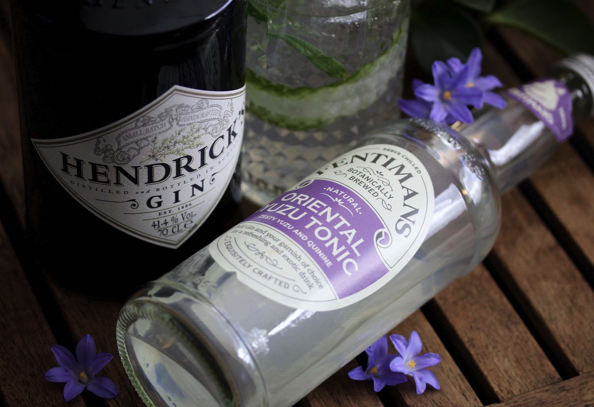
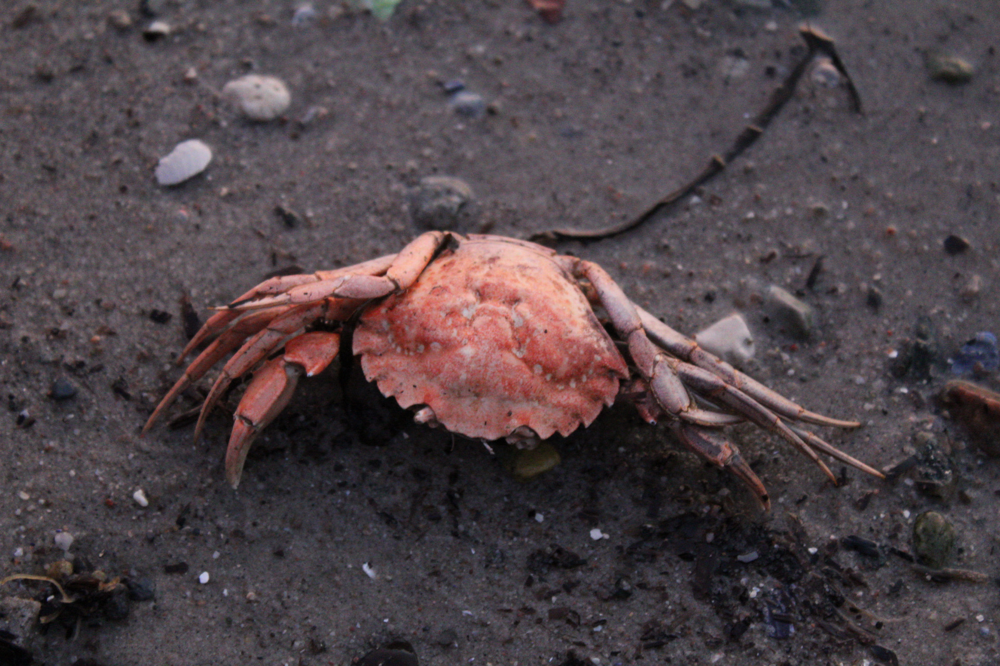
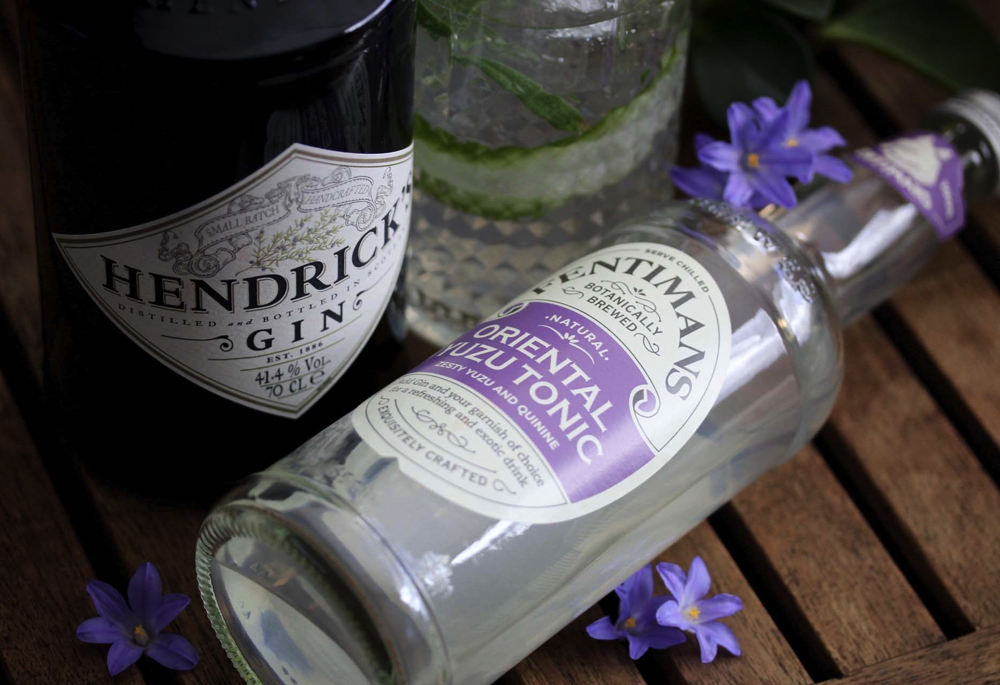


 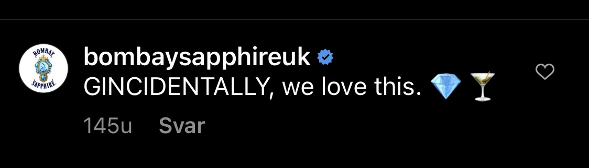
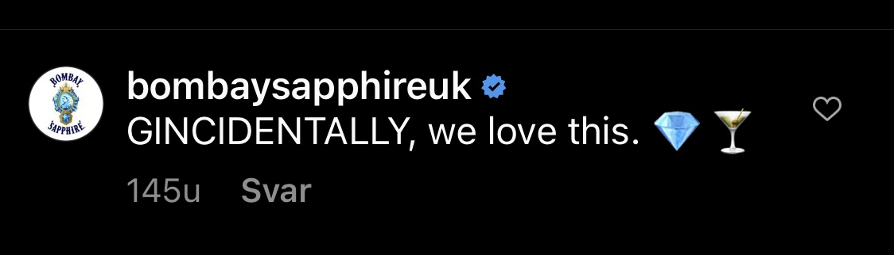
Nina B. Müller
Tjørnehaven 10, 2630 Taastrup
+45 20 41 78 88
nina162b@edu.zealand.dk